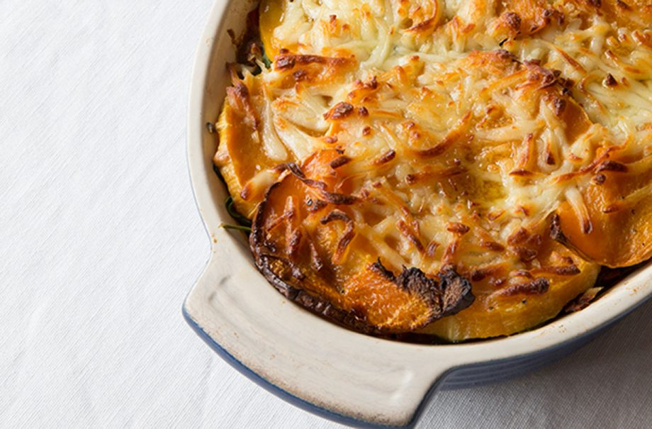

FODMAP lightened up lasagne recipe

Serves:
Cost:
Prep:
Cooking:
Skill:
6-8
Cheap
20 Min
1 Hr 45 Min
Easy
This delicious dinner staple is FODMAP diet friendly, thanks to cook book author Emma Hatcher, so you can keep enjoying classic dishes even if you’re on the FODMAP diet (plus it’s waistline friendly too!). It might look like it takes a while to put together but it’s mostly time in the oven, which means you can be getting on with other bits and bobs. Plus, we think it’s well worth the extra effort. Emma says: ‘I had reservations of calling this ‘lightened-up lasagne’, but there’s no better way to describe this dish that replaces wheat pasta with silky layers of butternut squash, making it gluten-free and lighter on the gut.’ Try it served alongside a kale based green salad.
Ingredients
-
1 parsnip, peeled and diced
- 3 carrots, peeled and diced
- 2 tins (400g each) chopped tomatoes
- Sea salt and freshly ground black pepper
Method
- In a large saucepan, heat 1 tablespoon of the oil and sauté the parsnip, carrot and pepper until soft. Add the mince and cook until browned.
- Pour in the tomatoes and water and stir in the oregano, bay leaves and basil. Simmer for roughly 1 hour until the meat is tender and saucy.
- Taste and season.
- Preheat the oven to 180°C (gas 4). Peel and cut the squash into thin slices, as if lasagne sheets. Bake in the oven with a drizzle of olive oil over the top for 15 minutes.
- Once tender, you can get to work on layering the lasagne, just quickly fish out your bay leaves from your meat first.
- In a baking dish, add one layer of the mince mixture, one layer of spinach and one layer of squash, repeating until all of the ingredients are used up. Sprinkle with the cheese and bake in the oven at the same temperature for 30 minutes, or until the top is crispy.